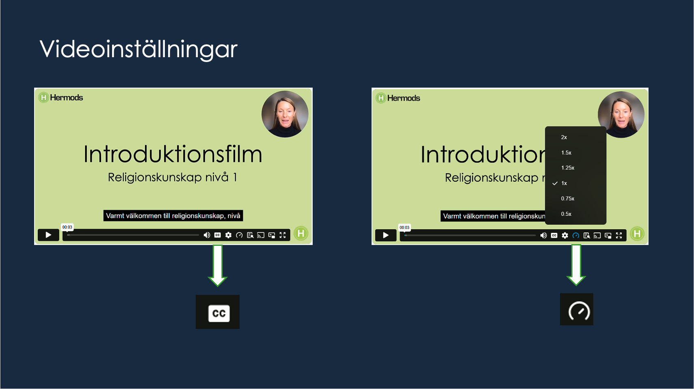
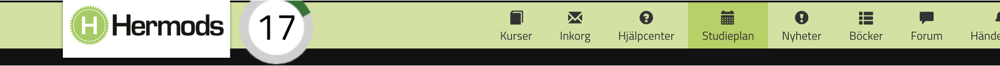
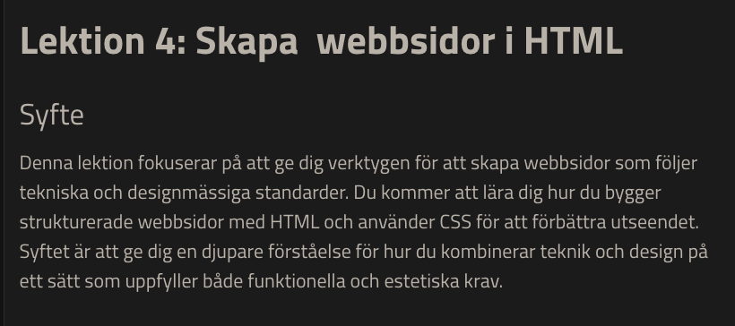
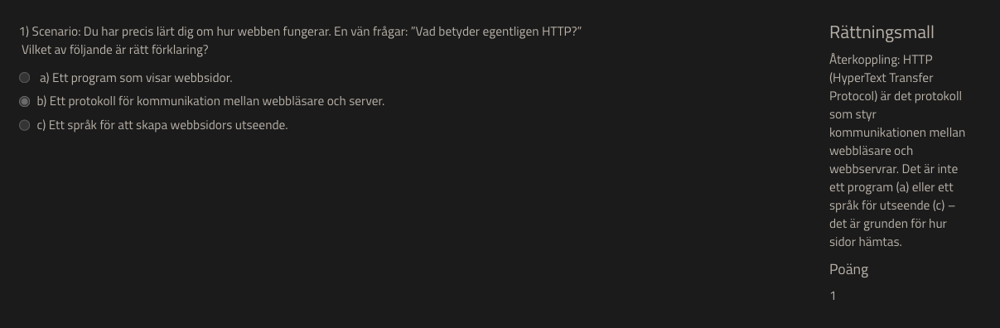
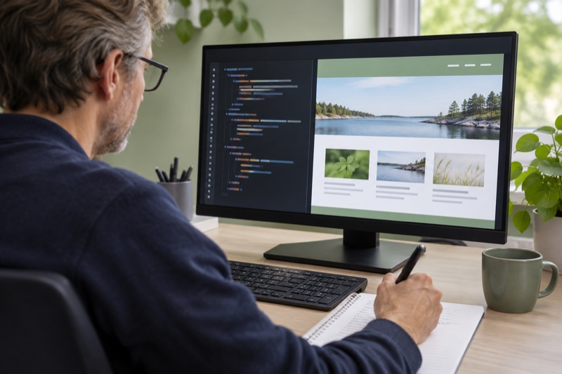
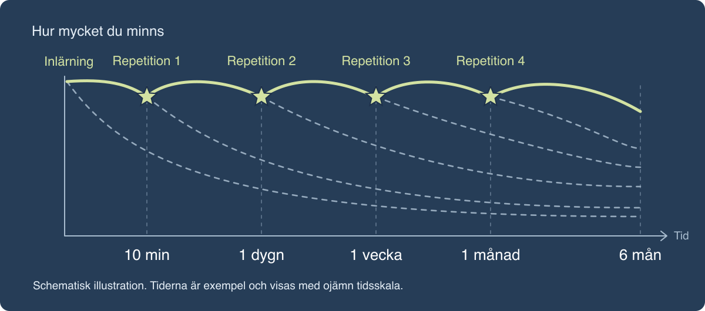
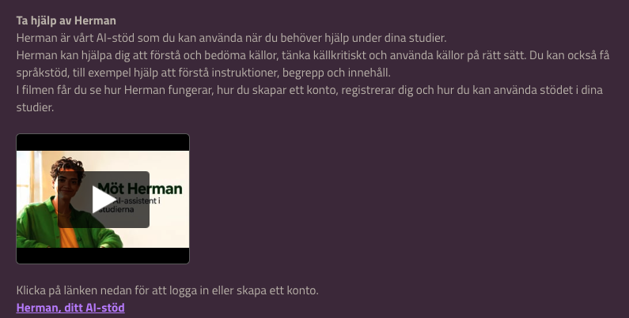
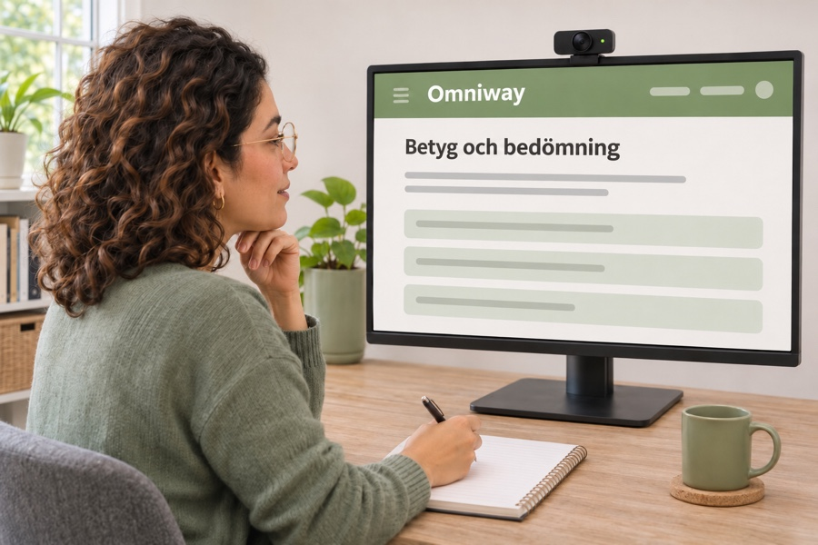
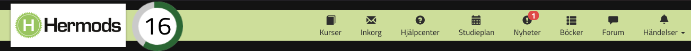

Webbutveckling nivå 2
Introduktionsfilm
Introduktionsfilm
Filmen innehåller AI-genererade bilder. Personerna på bilderna är fiktiva.
Välkommen! Hur gör du en webbsida mer interaktiv, snabbare och lättare att använda? På den här nivån får du bygga vidare på det du redan kan och testa dina lösningar i praktiken. Jag visar vad du behöver för att börja, hur arbetet i Omniway är upplagt och var du får hjälp.

Aktivera undertexterna med CC-knappen. Om du vill ha mer tid att ta in informationen kan du ändra uppspelningshastigheten via hastighetskontrollen. Pausa gärna filmen när du vill hitta samma vy i din egen kurs.
På nivå 2 bygger du vidare på grunderna. Du får skapa responsiva layouter med HTML och CSS och göra sidor interaktiva med JavaScript. Du arbetar med media och grafik och testar att det du bygger fungerar för olika användare. Du får också förbättra prestanda, arbeta med säker kod och ta ett webbprojekt från planering till testning och dokumentation.
Vi börjar med din individuella studieplan, kursmaterialet och hur kursen är upplagd i Omniway. Sedan får du tips på hur du kan lägga upp arbetet och hur Herman kan hjälpa dig. Till sist går vi igenom bedömningsmötena, betyget och vem du kontaktar om du behöver hjälp.

Gå till det gröna menyfältet på startsidan i Omniway och öppna din individuella studieplan, förkortad ISP. Svara på frågorna där. Det hjälper din lärare att förstå dina mål och vilket stöd som kan passa dig. Använd sedan tidsplanen i kursen för att se vilka uppgifter och bokningar som närmar sig.
Du behöver varken en lärobok eller några andra inköp för Webbutveckling nivå 2. Informationen, genomgångarna och materialet du behöver hittar du i ämnesnivån i Omniway. Utgå från länkarna och instruktionerna i varje lektion när du arbetar.
Skriv och redigera HTML, CSS och JavaScript
Versionshantera kod och hitta kursens kodexempel
Testa och granska det du bygger
Du behöver ett GitHub-konto. Du kan använda ditt konto från Webbutveckling nivå 1.
I VS Code skriver och redigerar du HTML, CSS och JavaScript. Du arbetar också med versionshantering i Git. Har du redan ett GitHub-konto från Webbutveckling nivå 1 kan du använda det. Skapa ett konto om du saknar ett. Kursens GitHub-sida innehåller kodexempel som du kan ladda ned. Använd webbläsarens utvecklarverktyg när du vill undersöka hur sidan fungerar, och verktyg som Lighthouse för att granska exempelvis prestanda och tillgänglighet.
I Omniway börjar du med introduktionsuppgiften och arbetar sedan vidare med lektionerna. Du får träna med flervalsfrågor och lämnar in uppgifter som läraren bedömer. Under kursen bokar du också två individuella bedömningsmöten.
Responsiv layout och JavaScript
Media, 2D-grafik med Canvas, 3D-grafik med Three.js och kvalitetssäkring
JavaScript, DOM och tillgänglighetstestning
Från planering till ansvarsfull utveckling
Kursen har fyra moduler. I den första fördjupar du dig i HTML och CSS och använder JavaScript för interaktivitet. I den andra arbetar du med webben som plattform för applikationer och med media och kvalitetssäkring. Du provar också att rita 2D-grafik i webbläsaren med Canvas och att skapa enkel 3D-grafik med Three.js. I den tredje fördjupar du dig i JavaScript, DOM och tillgänglighet. I den fjärde går du igenom webbprojektets olika faser och arbetar med säkerhet, lagar och etik. Följ ordningen och datumen i tidsplanen i Omniway.
I den första uppgiften får du berätta lite om dig själv, varför du läser kursen och hur du tänker lägga upp studierna. Skriv gärna vad du redan kan och vad du vill få hjälp med. Då kan läraren lättare stötta dig från början. Öppna introduktionsuppgiften i din kurs och kontrollera när den ska lämnas in.

Börja med att läsa syftet och målen. Gå igenom de centrala begreppen och följ instruktionerna och exemplen i lektionen. Du hittar kodexempel på kursens GitHub-sida. Prova själv, testa resultatet i webbläsaren och fundera på vad du behöver öva mer på.

I slutet av varje modul finns automaträttade öva-uppgifter. Använd dem för att se vad du redan kan och vilka delar du behöver gå tillbaka till. Om en fråga känns svår, leta upp begreppet i lektionen och prova igen när du har repeterat. Kontrollera deadline i tidsplanen.

Varje modul har en lärarbedömd uppgift. Följ instruktionerna i uppgiften och kontrollera att rätt fil har laddats upp. Gör textbaserade uppgifter till PDF så att text, bilder och formatering visas korrekt. Om du lämnar in ett webbprojekt samlar du HTML, CSS, skript och bilder i en mapp och packar den som ZIP. Använd lärarens återkoppling när du arbetar vidare.
En sak i taget
Ladda om sidan
Vad blev annorlunda?
Försök göra en liten ändring i taget. Spara, ladda om i webbläsaren och fundera på varför resultatet blev som det blev. När du kan förklara ändringen för dig själv är det lättare att använda samma idé senare. Om du kör fast, skriv ned vad du testat och ta med det till handledningen. Följ övningarna i Omniway så får du återanvända det du redan lärt dig.

Kurvan illustrerar hur minnet av det du just lärt dig avtar med tiden. Stjärnorna markerar exempel på tillfällen då du kan repetera. Prova att förklara med egna ord vad en CSS-klass gör efter tio minuter, nästa dag och igen efter en vecka. Återkom gärna efter en månad. Diagrammet sträcker sig till sex månader för att visa tanken med att komma tillbaka till kunskapen över längre tid.

Du hittar länken till Herman i början av kursen under Ta hjälp av Herman. Där finns en film om hur du loggar in eller skapar ett konto. Herman kan hjälpa dig att förstå instruktioner och begrepp och tänka källkritiskt. Du kan också be AI om återkoppling på kod du själv skrivit. Testa förslagen, jämför med kursmaterialet och se till att du kan förklara det du lämnar in.
Det första individuella bedömningsmötet ligger i modul 3 enligt kursens tidsplan. Läs lektionen Bedömningsmöten – bokning, regler och genomförande i början av modul 1 och boka en tid före deadline i din tidsplan. Logga in några minuter före mötet och välj Anslut när knappen visas. Testa kamera och mikrofon i förväg. Mötet ger dig återkoppling som hjälper dig att arbeta vidare inför kursens slut.
Du bokar själv det andra individuella mötet enligt din tidsplan. Se till att de lärarbedömda uppgifterna är inlämnade före mötet. Förbered dig genom att gå igenom uppgifter, lektionsanteckningar och återkoppling. Öva på att med egna ord förklara hur du har gjort och varför. Vid mötet får du visa dina kunskaper och svara på frågor om kursens innehåll.

Läraren gör en sammantagen bedömning av de kunskaper du visar i kursen. Det sista bedömningsmötet är särskilt viktigt eftersom du då har haft hela kursen på dig att utvecklas. När de obligatoriska momenten är klara hittar du information om ditt betyg under Betygsmotivering och ämnesmatris i kursen.

Intyg, studievägledning och annat stöd
Din lärare kan hjälpa dig att förstå innehållet på din ämnesnivå och svara på frågor om uppgifter, bedömningar och betygssättning. Du kan boka in handledningspass. Vid frågor om exempelvis förlängning, studieintyg och studievägledning hittar du kontaktuppgifter i Hjälpcenter i det gröna menyfältet i Omniway. Där hittar du också kontaktvägar om du behöver specialpedagogiskt stöd. Kontakta Hermods Studerandeservice om du behöver hjälp att boka ett bedömningsmöte, om det saknas bokningsbara tider eller om du har missat mötet. Kontakta dem också om du är försenad, vill ändra studietiden, har missat en deadline eller vill sluta en kurs.
Börja med studierna i Omniway, öppna kursmaterialet och öppna introduktionsuppgiften. När du kodar, ta en liten ändring i taget och se vad som händer i webbläsaren. Hör av dig om du fastnar. Lycka till, jag ser fram emot att se vad du bygger!